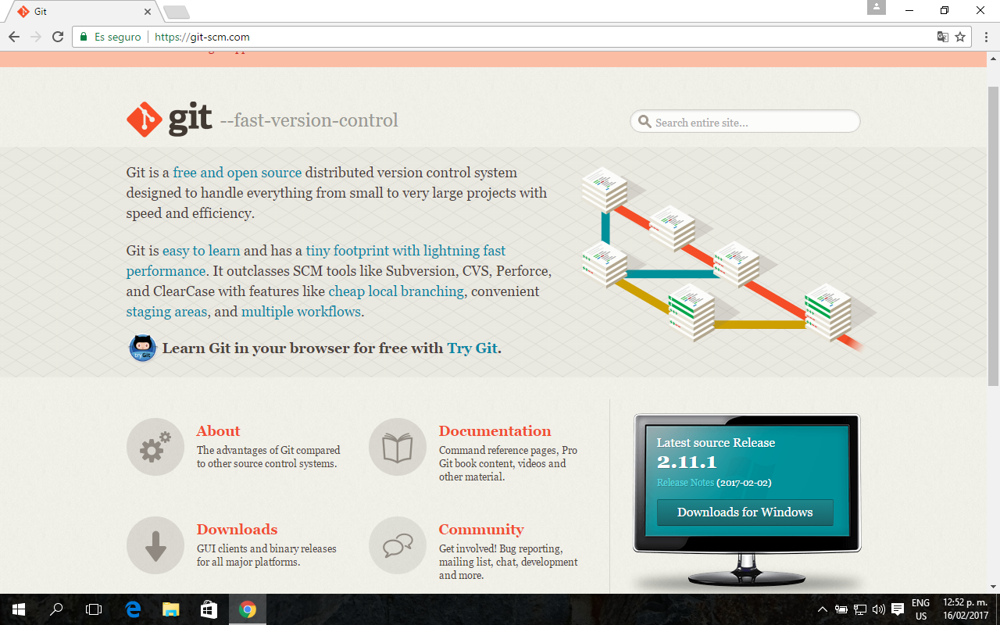

1-INTRODUCION2-HISTORIA DE GIT Y GITHUB3-COMO INSTALAR GIT4-COMANDOS TERMINAL5-COMANDOS GIT
Github github.com es un servicio para alojamiento de repositorios de software gestionados por el sistema de control de versiones Git. Por tanto, Git es algo más general que nos sirve para controlar el estado de un desarrollo a lo largo del tiempo, mientras que Github es algo más particular: un sitio web que usa Git para ofrecer a la comunidad de desarrolladores repositorios de software. En definitiva, Github es un sitio web pensado para hacer posible el compartir el código de una manera más fácil y al mismo tiempo darle popularidad a la herramienta de control de versiones.
Git es un sistema de control de versiones distribuido. Git fue impulsado por Linus Torvalds y el equipo de desarrollo del Kernel de Linux. Ellos estaban usando otro sistema de control de versiones de código abierto, que ya por aquel entonces era distribuido. Todo iba bien hasta que los gestores de aquel sistema de control de versiones lo convirtieron en un software propietario. Lógicamente, no era compatible estar construyendo un sistema de código abierto, tan representativo como el núcleo de Linux, y estar pagando por usar un sistema de control de versiones propietario. Por ello, el mismo equipo de desarrollo del Kernel de Linux se tomó la tarea de construir desde cero un sistema de versionado de software, también distribuido, que aportase lo mejor de los sistemas existentes hasta el momento.
A continuación veremos como instalar Git en los sistemas operativos: Windows
Cuando hablamos de controlar la versión de sistemas hay muy pocos que hagan el estupendo trabajo que hace GIT, tanto en rendimiento como en predominio. GIT fue desarrollado por Linus Torvalds en el 2005 y hoy en día, millones de compañías lo usan como un eficiente administrador de código y control de versiones en sus proyectos.
Este software de código abierto se puede descargar tanto para Linux, Windows, Mac y Solaris, y en este tutorial aprenderás los comandos básicos de GIT para sacarle el mejor provecho.
Uno de los comandos más usados en git es git config, que puede ser usado para establecer una configuración específica de usuario, como sería el caso del email, un algoritmo preferido para diff, nombre de usuario y tipo de formato, etc… Por ejemplo, el siguiente comando se usa para establecer un email:
git config --global user.email moises@gmail.com
Línea de comandos o terminal es una interfaz de texto en la que pueden escribirse reglas o comandos que el ordenador debe llevar a cabo. Muchas de las tareas que realizamos cotidianamente son realmente más eficaces si las llevamos a cabo con el terminal, especialmente en relación a los derechos de los archivos.
Desde el terminar podemos realizar diferentes tareas, como listar nuestros documentos, navegar a través de nuestros ficheros, crear nuevos archivos y carpetas, ejecutar programas, escribir scripts de complejidad variable, etc.
Para navegar a través de tus directorios y ficheros, hay una serie de comandos necesarios:
pwd - print working directory - indica en qué directorio te encuentrasls - list - lista los directorios y archivos de tu ubicacióncd - change directory - se utiliza para cambiar de directoriocd nombre_del_directorio - navega hacia un directorio descendientecd ../ - sube un directoriocd ../../ - sube dos directorioscd / - va al directorio raíz de tu ordenadormkdir - make directory - crea un directoriotouch - crea un nuevo file en el directorio donde te encuentras (acordaros de poner siempre la extensión)
lista de comandos para manipular los ficheros (mover, cortar, borrar)
ls -a - lista todos los ficheros, incluso los que están ocultos que empiezan por un .ls -l - lista todos los ficheros de un directorio en un formato largols -t - ordena ficheros y directorios según su fecha de modificaciónls -alt - lista todos los contenidos, incluso los ficheros ocultos y directorios, en formato largo, ordenados por la fecha de la última modificación.cp - copy - copia directorios y archivos. En primer lugar se señala el nombre del archivo cuyo contenido se desea copiar y a continuación el documento donde se quiere pegar:cp fichero_origen.txt fichero_destino.txtcp fichero_origen.txt directorio_destino/ copia un fichero en un directorio de destino.cp fichero_origen.txt fichero_destino.txt directorio/ cambia los dos ficheros a un directorio de destino. N.B. Si deseáramos copiar diferentes ficheros en un directorio, deberíamos indicar en primer lugar todos los ficheros y en último lugar el directorio o archivo de destino.